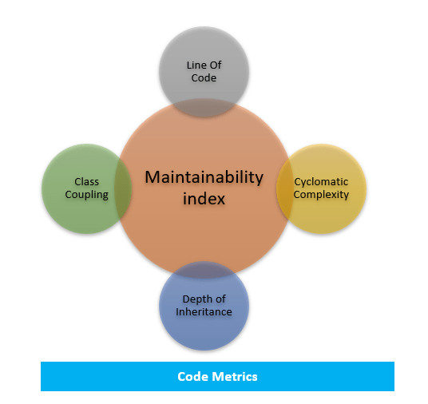
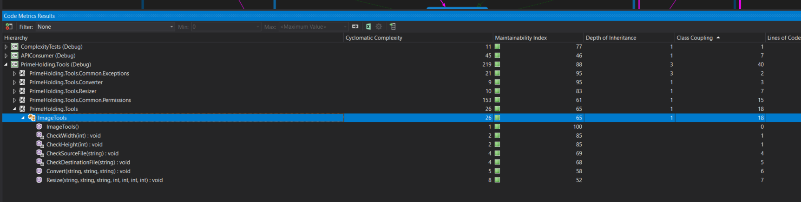
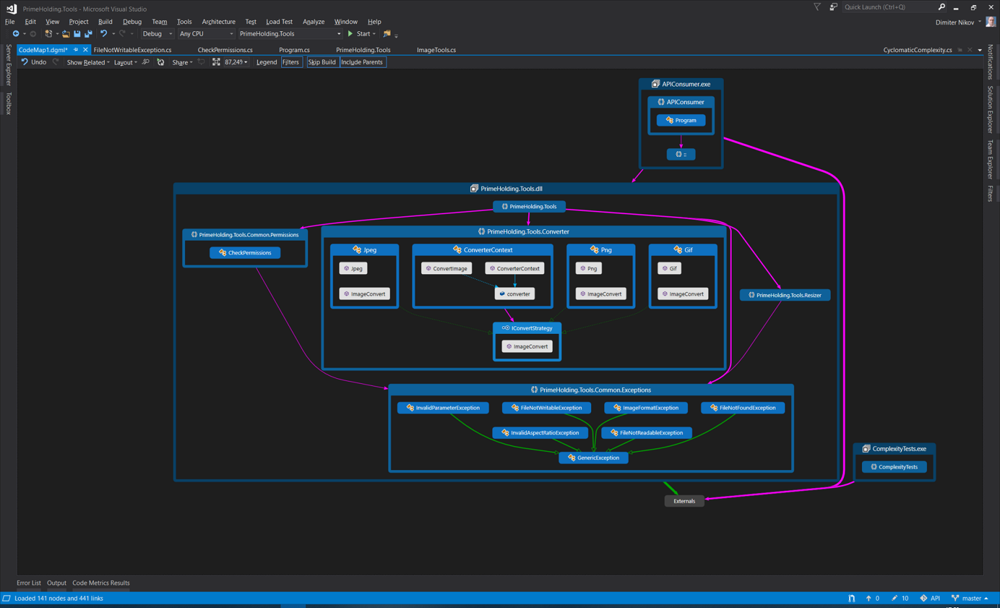
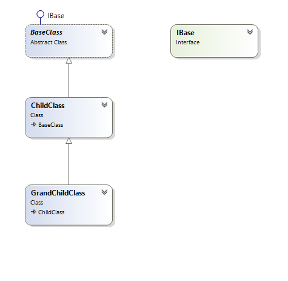
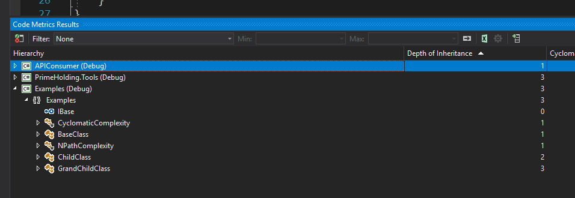
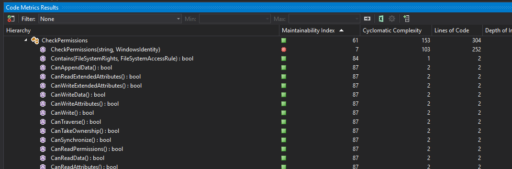

Стандартни инструменти на Visual Studio за анализ на кода
Димитър Ников, Пеньо Русев
prusev@sbnd.net
prusev@sbnd.net
Съдържание
- Въведение
- Цикломатична комплекност (Cyclomatic complexity)
- Брой линии изходен код (Lines of source code)
- Свързаност между класовете (Class coupling)
- Степен на наследяване (Depth of Inheritance)
- Индекс за поддържане (Maintainability Index)
Въведение
Взаимодействие между различните метрики

Предимства при анализ на софтуерните метрики
- Подобрява се поддържаемостта на кода
- Намалява риска при разширяване / добавяне на функционалност
- Подобрява се сигурността при изпълнеие
Цели
- Как се тълкуват метриките
- По какво се различават една от друга
- Кои са минимални, максимални и оптимални стойности
- Как се калкулират стойностите
- Как да се оптимизира кода
Брой редове изходен код (Line of source code / SLOC / LOC)
Дефиниция
- Представлява броя редове изходен код
- Видове LOC:
- LOC (Line of code) - брой редове във файла, съдържащи програмен код
- LLOC (Logical Lines Of Code) - брой редове логически изпълним код (без коментари и празни редове)
- SLOC (Source Lines Of Code) - брой редове изходен код (програмен код + коментари + многоредови символни низове)
- CLOC (Comments Lines of Code) - брой редове, съдържащи само коментари
- MLOC (Multiline string Line Of Code) - брой редове, съдържащи многоредови символни низове
- BLOC (Blank Lines Of Code) - брой “празни” редове, съдържащи whitespace символи (интервал, таблуватор, нов ред и др.)
- Пример:
for (int x = 0; x <= 100; x++) Console.WriteLine("X = {0}", x); // Колко реда код има в тази проста програма?
for (int x = 0; x <= 100; x++)
{
Console.WriteLine("X = {0}", x);
// Колко реда код има в тази проста програма?
}
За примерите по-горе, дължината (броя редове) е както следва:
- Пример 1:
- LOC - 1 ред
- LLOC - 2 реда - един за for() и един за WriteLine()
- CLOC - 1 ред
- SLOC - 1 ред
- Пример 2:
- LOC - 6 реда
- LLOC - 2 реда
- CLOC - 1 ред
- SLOC - 5 реда - един за for() и WriteLine(), два за фигурните скоби, един за коментара
- BLOC - 1 ред
Общи препоръки
- Rule of thumb: Старайте се методите ви да имат възможно най-малък брой редове код
- Препоръчителни стойности за SLOC:
- Минимална - 4 реда за метод, 8 за файл (минимум 1 метод във файл + namespace и дефиниция на клас)
- Максимална - според ограниченията на файловата система
- Препоръчителна - 40 реда за метод, 400 за файл (максимум 10 метода във файл)
- Превишаване на препоръчителната стойност е индикация за нарушвение на Single Resposibility Pattern
- По-дългите методи / файлове са кандидати за refactoring
- В определени случаи се допуска отклонение, ако проекта го изисква
Свързаност между класовете (Class Coupling)
Дефиниция
- Измерва зависмостите на клас от други класове / типове
- За всяко ниво на зависимост (абстракция) включва брой класове / типове, от които зависи конкретния клас
- В броя не се включват примитивни и built-in типове
- По-висока стойност е индикация за по-висока сложност (на приложение, абстракция, архитектура и др.)
Пример

Общи препоръки
- Старайте се класовете ви да имат минимални зависимости помежду си
- Старайте се да не използвате твърде много (според целите на проекта и/или екипа) библиотеки / frameworks
- Използвайте Class диаграми за проследяване на връзките между класовете

- Използвайте CodeMap диаграми за идентифициране на висок брой зависимости


Степен на наследяване (Depth of Inheritance)
Дефиниция
- Тази метрика показва позицията на класа в класовата йерархия
- Всички класове са директни производни на System.Object
- Стойността по подразбиране е 1 за всички класове
- Имплементираните интерфейси не се отчитат при калкулиране на стойностите
Пример
namespace Examples
{
public interface IBase
{
}
public abstract class BaseClass : IBase
{
}
public class ChildClass : BaseClass
{
}
public class GrandChildClass : ChildClass
{
}
}


Общи препоръки
- Препоручва се да поддържате минимална степен на наследяване
- Минимална стойност - 1
- Максимална стойност - няма, според сложността и обема на проекта
- Препоръчителна стойност - под 4
Индекс за поддържане (Maintainability Index)
Дефиниция
- Комплексна метрика, която измерва усилията за поддържане на кода като качествен показател
- Приема стойности от 0 до 100, като по-висока стойност означава по-лесно поддържане на кода
- Стойността на индекса е базирана на следните метрики:
- Цикломатична комплексност
- Брой редове код
- Обем на Халстед
- Пресмята се по формулата (във VisualStudio) Maintainability Index = MAX(0,(171 - 5.2 * ln(Halstead Volume) - 0.23 * (Cyclomatic Complexity) - 16.2 * ln(Lines of Code)) * 100 / 171)
- Обем на Халстед се пресмята от следните метрики:
- Дължина на програмата N, пресмята се по формулата N = N1 + N2
- Дължина на речника n, пресмята се по формулата n = n1 + n2
- Обем на Халстед се пресмята по формулата V = N * log2(n)
- Обема на една програма трябва да бъде между 20 и 1000
- Стойности над 1000 са индикация за рафекторинг (метода изпълнява повече от едно действие)
- Обема на един файл трябва да бъде между 100 и 8000
- Дължина на програмата N, включва:
- Сумата от броя на операторите N1
- Сумата от броя на операндите N2
- Дължина на речника n, включва:
- Сумата от броя на различните (уникални) оператори n1
- Сумата от броя на различните (уникални) операнди n2
Пример

Общи препоръки
- Тълкуване на резултатите:
- Стойности от 0 до 9 - нисък индекс за поддържане на кода
- Стойности от 10 до 20 - среден индекс за поддържане на кода
- Стойности от 21 до 100 - висок индекс за поддържане на кода
- Стойности под 21 са индикация за рефакторинг, ако е приложимо
- Полезни инструменти:
Задачи за самостоятелна работа
- Стартирайте Code analysis за избран от вас проект или използвайте примерния код
- Анализирайте всички резултати от инструментите на Visual Studio
- Идентифицирайте потенциални проблемни части на кода и планирайте промени за оптимизиране
- Направете анализ на получените стойности и идентифицирайте потенциални проблеми места в кода
Метрики за анализ качеството на кода - Стандартни инструменти на Visual Studio за анализ на кода